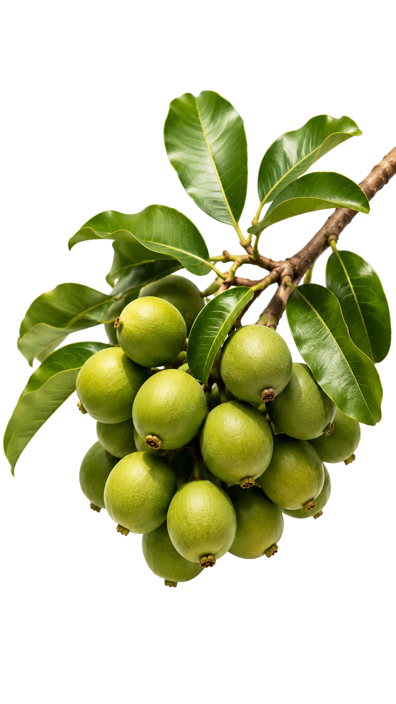
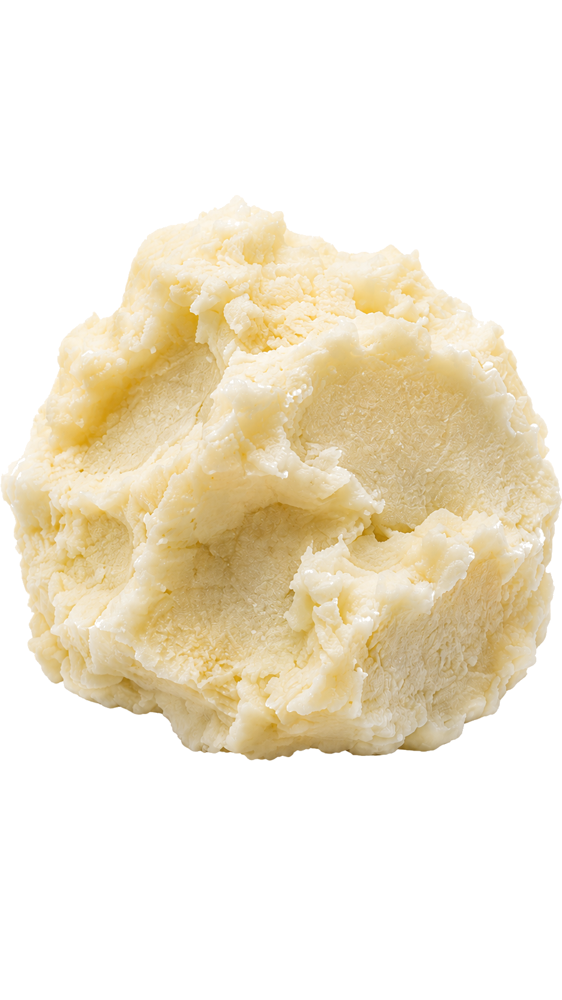
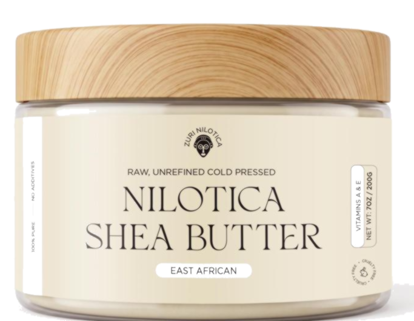
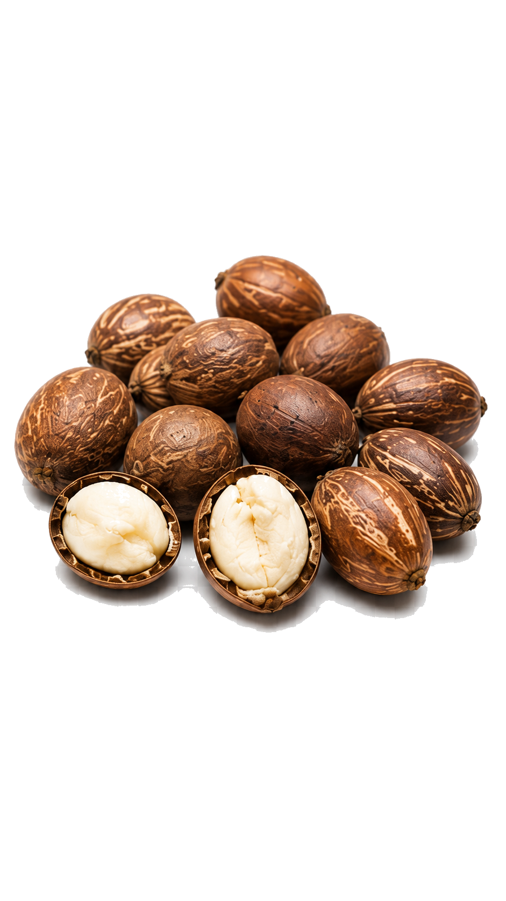
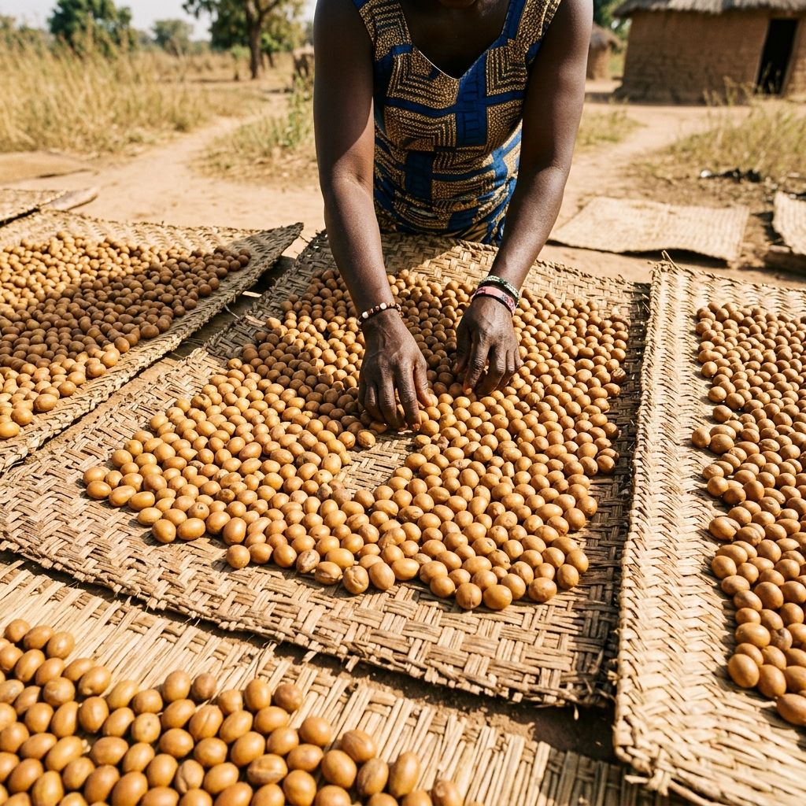
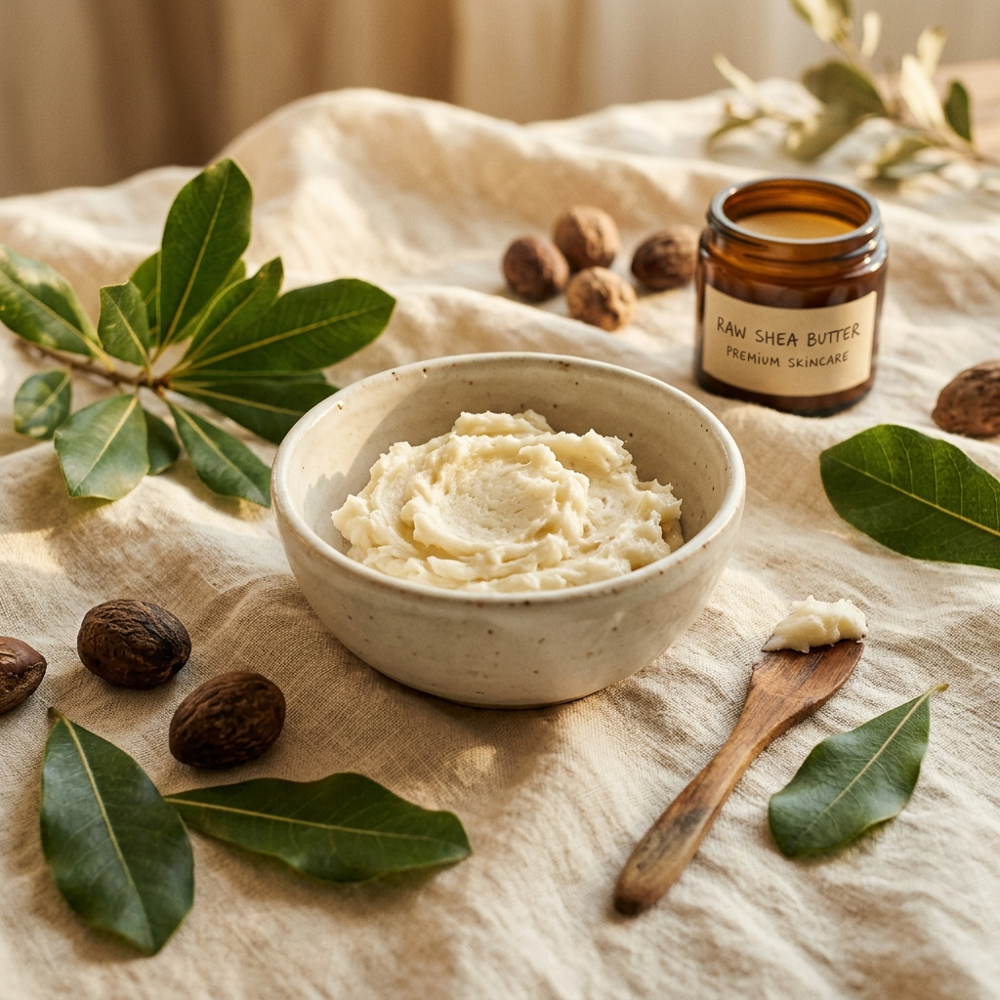
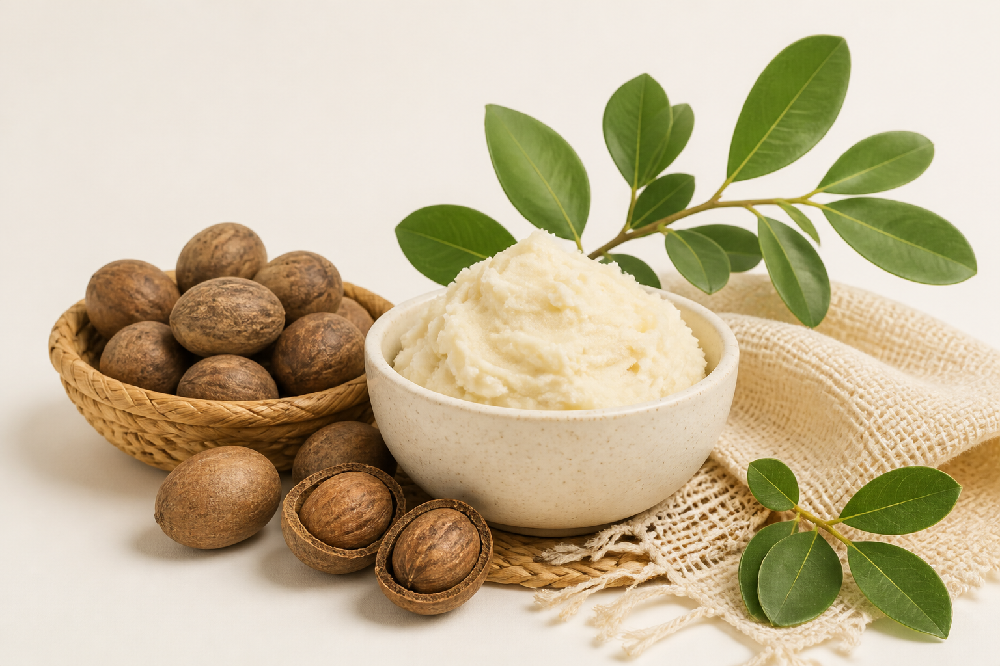

Pure
100% cold pressed Nilotica shea butter. Zero synthetic fillers and zero fragrance.


Pure Ugandan Nilotica Shea Butter
Unrefined luxury, cold pressed at the source.

A rare, silky skincare routine made from one ingredient and sourced through women led cooperatives in Northern Uganda.

Rare East African shea, presented as modern luxury.
Zuri Nilotica was created around one hero ingredient: Vitellaria nilotica, a rare East African shea known for its silky, smooth texture and quick melting feel.
Our purpose is to move shea beyond the idea of a hard, greasy commodity and reveal cold pressed skincare that feels refined and easy to use.
You should know what is in the jar, who helps produce it, and why Nilotica melts on contact and absorbs so differently from heavier shea.





Source100% cold pressed Nilotica shea butter. Zero synthetic fillers and zero fragrance.
Direct women led cooperative partnerships keep the Northern Ugandan source visible.
One silky balm for face, lips, body, hair ends, and simple daily care.
Ready to discover unrefined luxury?
Explore the Product Read the Sourcing Story